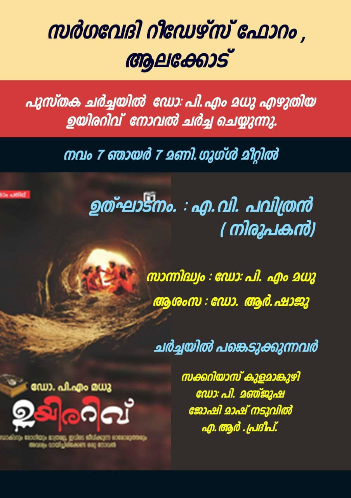
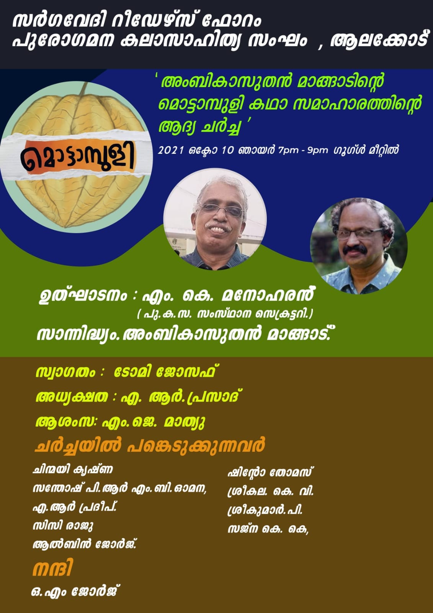
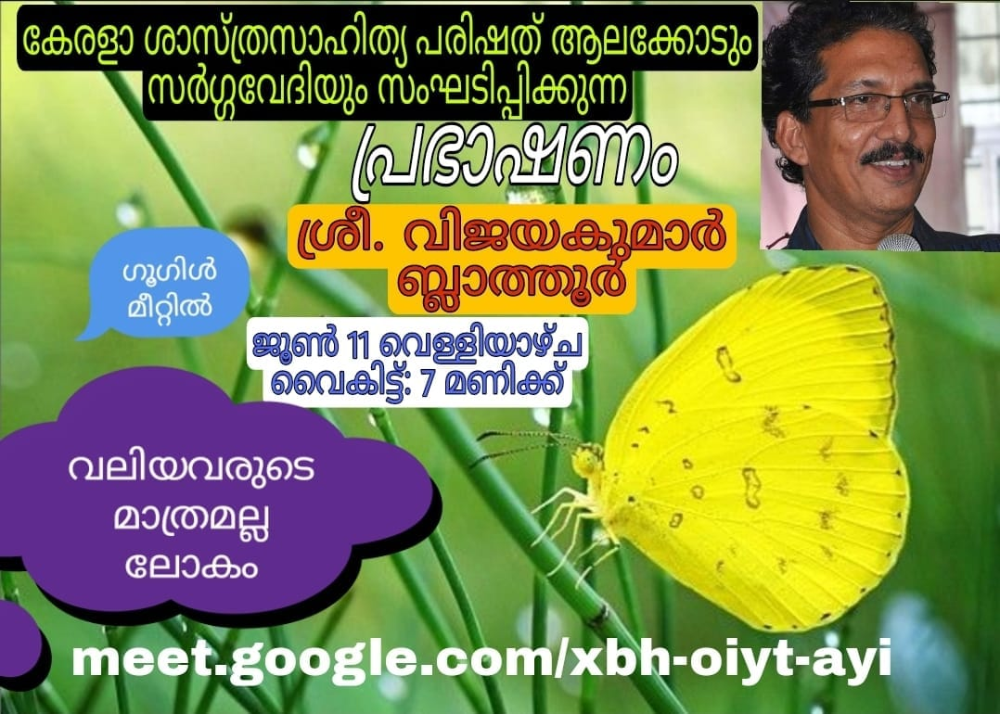
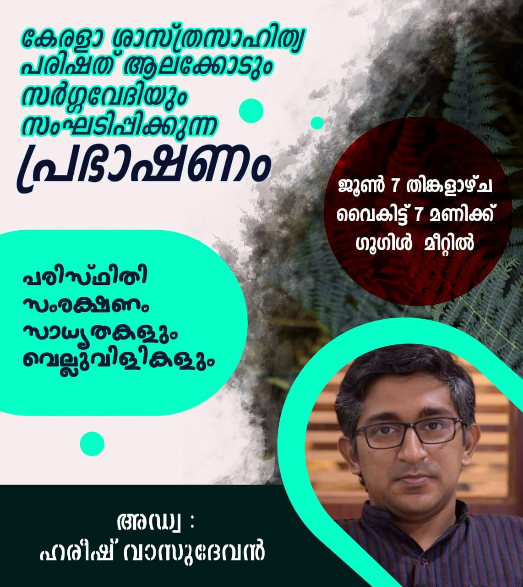

സർഗ്ഗവേദി ആലക്കോടും, കേരള ശാസ്ത്ര സാഹിത്യ പരിഷത്തും സംയുക്തമായി ജൂൺ 5 മുതൽ 11 വരെ പരിസ്ഥിതി ക്ലാസ്സുകളും , സെമിനാറുകളും സംഘടിപ്പിക്കുന്നു.
സമാപന ദിനമായ ഇന്ന് ജൂൺ 11 വെള്ളിയാഴ്ച വൈകു 7 മണിക്ക് പ്രശസ്ത പരിസ്ഥിതി പ്രവർത്തകനും , അദ്ധ്യാപകനും സിനിമാ നിരൂപകനും സംവിധായകനുമായശ്രീ വിജയകുമാർ ബ്ലാത്തൂർ ക്ലാസെടുക്കുന്നു.

സർഗ്ഗവേദി ആലക്കോടും, കേരള ശാസ്ത്ര സാഹിത്യ പരിഷത്തും സംയുക്തമായി ജൂൺ 5 മുതൽ 11 വരെ പരിസ്ഥിതി ക്ലാസ്സുകളും , സെമിനാറുകളും സംഘടിപ്പിക്കുന്നു.
ജൂൺ 7 ന് , തിങ്കളാഴ്ച വൈകു 7 മണിക്ക് പ്രശസ്ത പരിസ്ഥിതി പ്രവർത്തകനും , സാമൂഹ്യ പ്രവർത്തകനുമായ അഡ്വ. ഹരീഷ് വാസുദേവ് ആണ് പരിപാടിയിൽ പങ്കെടുക്കുന്നത്.